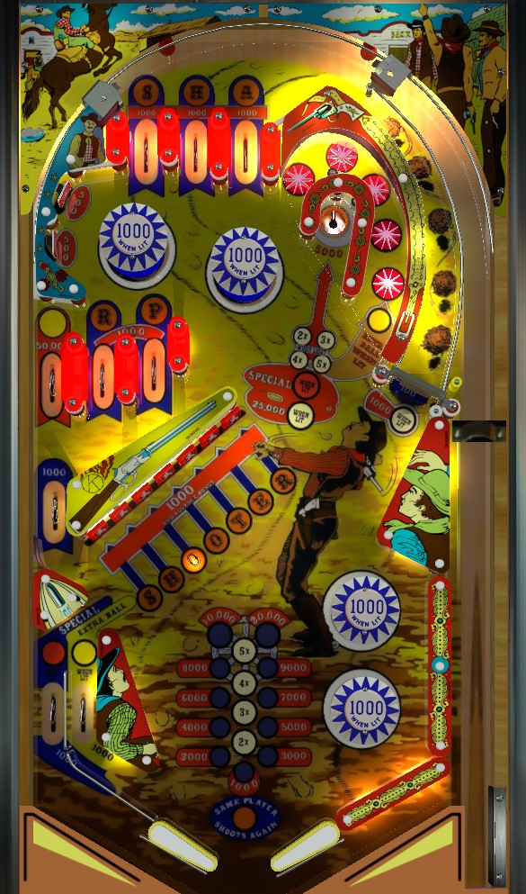

Bonus multiplier carries over for the whole game, so it's most important early in the game to shoot for the saucer or completions of the SHOOTER targets to gain a couple multipliers. Any rollover lane or drop target gives a bonus advance as well. Once both base bonus and bonus X are high, either stick to additional SHOOTER completions, or become friends with the spinner.
These lanes correspond to the letters, S, H, and A in SHARP. Each one scores 1,000 points, one bonus advance (if not lit already), and the lit letter. There is no bonus for completing the three lanes on their own; the prize comes from spelling SHARP, of which the R and P come from the lower rollover lanes mentioned later.
Bumpers score 100 points each, or 1,000 when lit. The only way to light the bumpers is at the standup targets in no man's land at the upper left of the table that can only be hit with immense pop bumper luck. The upper standup lights the left top and upper bottom bumper, while the lower standup lights the right top and lower bottom bumpers.
If you end up here, lighting the bumpers is a nice boon, but don't rely on this as a strategy.
On Sharpshooter, the horseshoe shot contains 5 star rollovers, which score 100 points when not lit or 1,000 points and a bonus advance when lit; they are lit based on which letters in SHARP have been collected. On Sharp Shooter II, the upper right horseshoe scores 1,000 points and a bonus advance. This is the only scoring difference between Sharpshooter and Sharp Shooter II. In both games, the horseshoe shot also advances the multiplier of the saucer score. After SHARP is completed, this loop is also one of the places that can be lit for extra ball.
The saucer scores 5,000 points by default when not lit. Trips around the horseshoe multiply the value of this saucer up to 25,000. Any shot to the saucer also advances the end of ball bonus multiplier if it is not already at 5X.
If the SHOOTER targets are completed when the bonus multiplier is already at 5X, the saucer will be lit alternately with the left out lane for a special. If said special is collected at the saucer, the saucer will be solidly lit for 25,000 for the rest of the ball, which then unlights at the end of the ball.
Scores 100 points per spin when not lit, or 1,000/spin when lit. The spinner is lit any time the bonus multiplier is at least 2X. Don't shoot for it immediately though, as there's more long term value in getting up to 4X or 5X bonus before making the spinner a priority. If you choose to shoot the spinner as a strategy, know how to recover when something goes wrong: an early shot that hits the post left of the spinner can center drain, and a spinner shot that doesn't get all the way to the top lanes will fall back down and likely hit the top lower bumper for a complete loss of control. The spinner is probably the best souce of late game points if it can be made consistently, though.
A set of three rollover lanes in the middle-left of the playfield. The R and P lanes function identically to the top S, H, A lanes, giving 1,000 points plus a bonus advance and lighting the corresponding letter. Spelling SHARP by lighting the R and P here as well as all three top lanes advances the bonus multiplier and lights an extra ball that alternates between the left in lane and upper horseshoe shot.
The Star lane next to the R and P does not give any letters or bonus advance, but does score 50,000 points.
Any ball that ends up in any of the three lanes here will funnel into an even lower rollover lane that also scores 1,000 points and a bonus advance, allowing the ball to dribble off the left slingshot.
It is very difficult to end up in the Star-R-P lane structure on purpose. Do not rely on this as a method of bonus multiplier collection. Eventually, though, with enough long balls and trips to the top of the playfield, the ball will probably bounce down here and complete the lanes for an extra ball chance. Thankfully, progress on SHARP lanes is preserved between balls.
Each individual drop target scores 1,000 points and a bonus advance. Completing the entire 7-bank resets it and advances the bonus multiplier. Somewhat surprisingly, all 7 of the targets can be hit from a trap on either flipper, including a very tight backhand to get the S from the left. It's very important to hit some drop targets at the beginning of the game to earn some multipliers, but also at the beginning of each ball as this is the easiest way to build base bonus.
Completing SHOOTER when 5X bonus is already lit will light the special, which alternates between the left out lane and the upper right saucer. If SHOOTER is completed after the special is collected, whichever target was hit down last will flash when the bank resets; hitting the flashing target scores a special.
The left side of the table bottom is conventional, with an in lane, out lane, and slingshot. Both lanes score 1,000 points and a bonus advance. The in lane is lit for extra ball alternately with the upper right horseshoe lane after SHARP is completed. The out lane is lit for special alternately with the upper right saucer if SHOOTER has been completed with 5X bonus already lit. These lights alternate with every hit to the bumpers, left slingshot, or the 10 point rebound rubber above the SHOOTER targets.
The right side of the table bottom is...something else entirely. There is no out lane, and there's not even really an in lane; there are two entire pop bumpers instead. It seems dangerous to have bumpers so close to the flippers and drain, but these bumpers don't really cause drains all that often unless they're shot into directly from the left flipper. Holding up the right flipper just to be safe when the ball is on a date with the lower of these two bumpers isn't an awful idea.
A sneaky thing to be mindful of is the rubber below the lower of these bumpers. It can be very bouncy and lead to a ball unexpectedly and entirely dodging the right flipper as it leaves the bumper area.
If the bumpers have been lit, a surprising number of points can be scored if the ball ends up between these bumpers and the right wall, but shooting for this directly is just asking for trouble.
Bonus multiplier is always carried forward from ball to ball, even if it is maxed out, and is advanced at the upper right saucer or by completing SHARP (unlikely) or SHOOTER (likely). Max bonus multiplier is 5X.
Bonus is advanced by any drop target or rollover lane. Max base bonus is 29,000. Base bonus count is never carried over from ball to ball. Max total bonus is 5x 29,000 = 145,000 points.
Note that unlike many games of the time, the first bonus advance is not given for free. It is possible to drain a ball with 0 bonus.
Special can be set to give a free game or an extra ball, but neither can be set to points for tournament/novelty play.
Some information about game mechanics and strategies was provided by GlitchCat7.